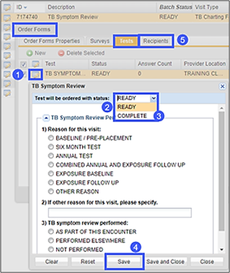
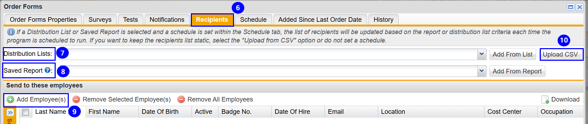

ReadySet provides the ability to enter data into a charting form with common information that can be saved or completed in each participant record in bulk. For example, if you have a list of participants who have completed their TB Survey, with no TB Symptoms reported, you want to batch process the common information to each participant’s record. This process is available in C3/Order Forms or Incident tab.
Batch Processing in C3 – Order Forms
Click the Editicon of the form to enter data.
If the test is to be saved to each person’s record, select Ready. This allows you to enter additional information in the form from the participant record.
If the test is to be submitted, select Complete. The status will change to complete and will be viewable in the Participant Record > Medical Chart > Results Tab.
Enter data common to all participants in this batch and click Save. You are now ready to add the participants whose records will be updated with this information using the Recipients tab.

Adding Recipients
Select the Recipients tab.
You can add the recipients using any of the following methods:
Click Send when you have confirmed the data charted and recipients added.

Batch Processing in C3 – Incident
In the Assign Tests/Exams section, click the Edit icon of the form to enter data.
If the test is to be saved to each person’s record, select Ready. This allows you to enter additional information in the form from the participant record.
If the test is to be submitted, select Complete. The status will change to complete and will be viewable in the Participant Record > Medical Chart > Results Tab.
Enter data common to all participants in this batch and click Save and Close.
When you click Send, the form(s) using the batch processing will display the data entered for each participant under the Injured Party section.